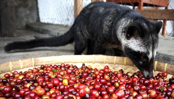
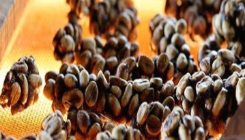

อินโดนีเซีย


ชวา วิธีการเฉพาะของที่นี่คือ การบ่มในโกดังพิเศษเพื่อให้เมล็ดกาแฟเปลี่ยนสี และมีรสชาติที่ดี สุมาตรา ผู้เชี่ยวชาญบางคนกล่าวว่า กาแฟแมนเฮลิงและอันโกลาของชวา มีรสชาติดีกว่าบลูเมาน์เทนและโคน่าเสียอีก การส่งออกกาแฟเริ่มต้นขึ้นในปี 1711 บริการส่งออกถูกควบคุมโดยบริษัท Dutch East India Company